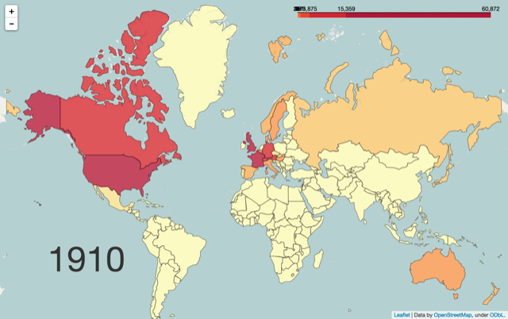
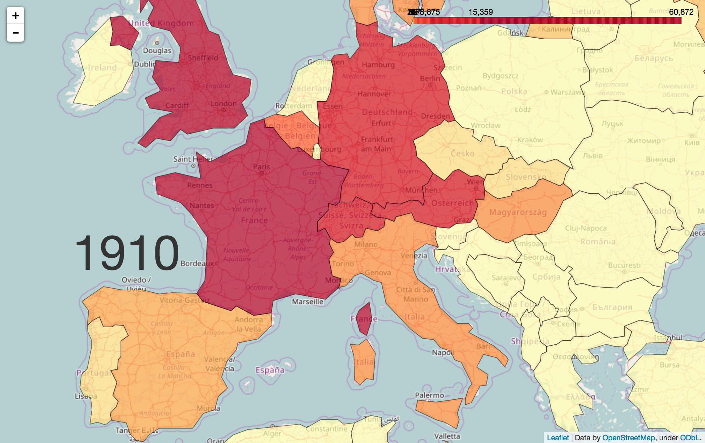
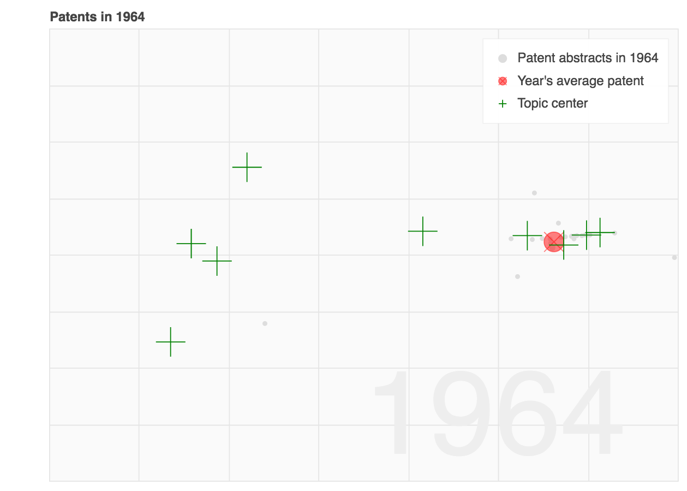

History of Patents in Switzerland
31.01.2017 - Soufiane, Arnaud & Yu
Patents : Motivation
Patents are a truely fascinating subject because they capture a lot of information. Indeed, they enable to identify the state-of-the-art in a specific technological field, and they also reveal the countries competitiveness. With almost 1,000,000 new patent documents published every year, it is impossible to do a manual analysis on this particular data, that's why we thought it was a great support to try the tools learnt during the Applied Data Analysis course.
Leading countries over all are Japan, US, China, Germany. Unfortunately, there's no sign of Switzerland for now...
There's a very distinctive flat trend during two periods : we can quickly note that they correspond to World Wars
Our data was extracted from the European Patent Office (EPO). The EPO offers on its web site several free services, including Espacenet and Open Patent Services (OPS) for searching within more than 90 million patent documents from around the world and from the 19th century right up to today. We used their tool PATSTAT Online to query their database and export structured data.
World Patent Evolution
Find below a visualization of both ....
Have fun
All the countries

Zoom into CH and EU

Swiss Patent Topics
What do patents talk about ? One could go manually over all the patents, but we have nearly 50'000 of them. So we tried to extract topics automatically on patents abstracts and visualize what abstracts of patents were talking about. Our study here involves 25'000 patents selected randomly from 1964 to 2013. All these patents applications were done in Switzerland. Our full pipeline involves :
- Tokenize
- Normalize : put to lower case
- Lemmatize : keep only lemmas
- Filter out stop words
- Filter out some Part of Speech tags
| # | Ranked keywords that describe most the topic | Label |
|---|---|---|
| 0 | use active substance agent composition cell plant contain animal treatment one comprise form andor also activity preparation contains method least | life science |
| 1 | drive shaft wheel motor axis mount rotate rotation unit gear mechanism movement disc bearing brake rotor driven support rotary lever | mechanics |
| 2 | element say invention least one device relates 1 comprise 2 mean comprises can 3 first wherein body area surface provide | |
| 3 | can use image possible without mean thus make order high result case reduce increase invention time small require achieve effect | |
| 4 | layer material sheet strip plastic cover film make form surface can adhesive one weld side paper use may coat apply | materials |
| 5 | surface section edge two side form one angle end axis longitudinal face direction plane parallel groove low portion plate shape | |
| 6 | 12 14 10 11 13 15 20 16 18 17 21 22 19 23 24 25 26 mean image 30 | |
| 7 | material product process water liquid solid dry particle mixture use mix phase form substance can powder method remove contain content | materials |
| 8 | signal control switch circuit output connect power pulse supply voltage current frequency input unit energy line device via generator system | electricity |
| 9 | plate frame element support wall side profile panel form 1 can 2 base one two part edge 3 cover connect | |
| 10 | dye resin polymer acid wt use fibre pref least material agent contain weight synthetic polyester contains polyamide esp andor may | chemistry |
| 11 | data unit device module system information control network method store mobile user transmit receive one provide card use station computer | information |
| 12 | light optical beam image source laser radiation cell lens lamp device screen use colour mirror solar transparent surface camera element | optics |
| 13 | end tube ring screw sleeve outer inner body pipe thread 1 hole part head 3 2 bore cylindrical seal form | |
| 14 | measure sensor value device determine measurement signal method control test system sample point detect position reference target unit parameter | |
| 15 | roller yarn machine guide device thread conveyor belt roll direction transport move one feed needle transfer station convey end wind | transport |
| 16 | air water gas heat flow chamber pipe filter outlet liquid channel heating supply nozzle tank inlet cool system tube connect | thermodynamics |
| 17 | alkyl h formula r low r2 opt r1 cpds x substd r3 n halogen alkoxy y oh prepd r4 cpd | chemistry |
| 18 | cut tool machine device workpiece 30 32 head 31 40 blade work guide 41 42 can 34 50 33 grind | |
| 19 | 1 2 3 4 5 6 7 8 9 image 10 11 mean part arrange 12 can 13 connect device | |
| 20 | support can position rail frame guide arm vehicle slide 1 mount vertical door two end lift pivot seat move cable | |
| 21 | layer surface metal material coat substrate include method form make independent claim structure alloy andor component | |
| 22 | end part clamp plate lock spring position two element one pin fix can device arm 1 2 fasten hold strap | |
| 23 | container wall opening can cover 1 part side housing 2 open box bottom base closure 3 lid close top provide | |
| 24 | material mould produce cast metal core plastic form cavity make part use melt shape fill body injection process foam method | materials |
| 25 | compound group formula image acid hydrogen atom prepared salt radical can substitute r1 represent obtain use correspond derivative 1 denotes | chemistry |
| 26 | c acid pref degree deg reaction solvent b g ii salt give presence use temp catalyst metal soln ml add | chemistry |
| 27 | first second watch display one time case two position third hand comprises part include hour movement unit zone set provide | |
| 28 | valve pressure chamber piston cylinder device housing pump fluid seal control liquid position connect member can outlet opening air membrane | mechanics |
| 29 | contact electrode wire coil connect magnetic electrical cable conductor current one circuit field connection magnet element two wind insulate pole | electricity |
What's very interesting is to see that innovation travels from chemistry to information sciences...
Total evolution
